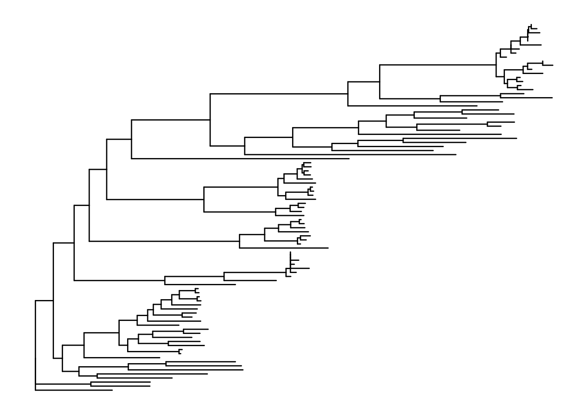
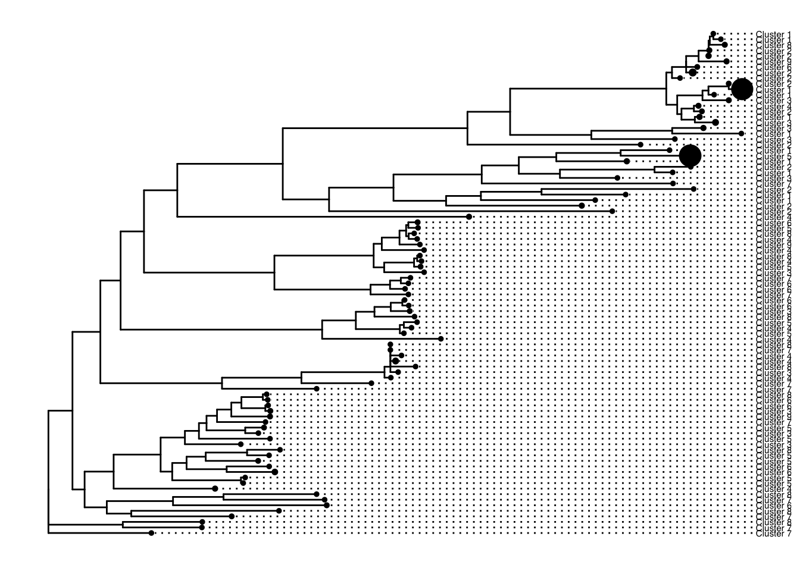
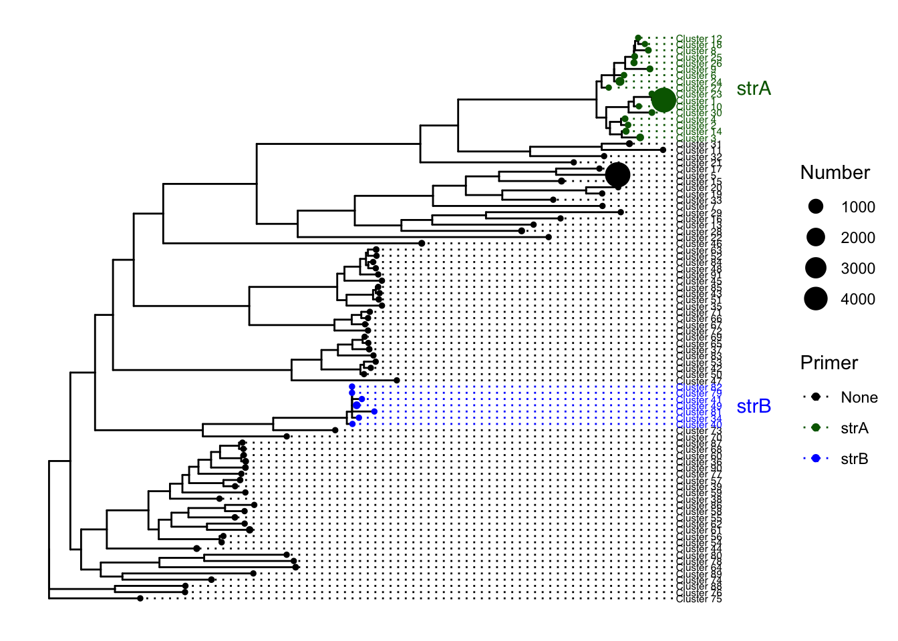
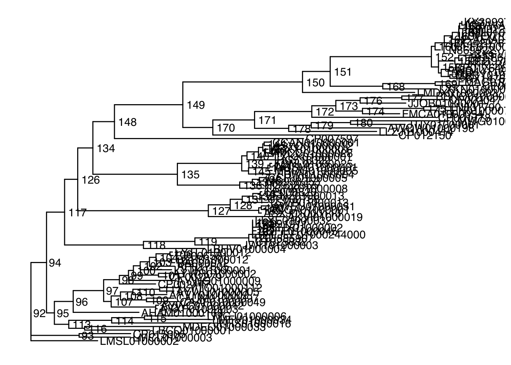

This is a small project that practices fetching data from databases and annotating metagenomes. In this tutorial, I analyze the genes strA and strB, but you can choose other genes. I follow the paper Practical implications of erythromycin resistance gene diversity on surveillance and monitoring of resistance from Choi et al. (2018).
There is a lot of bioinformatic assumptions that this workflow is based on and I will try to explain them as I go. You may disagree with some of them, and thats OK. I challenge you to try it your way, compare your results with mine, and then convince me why your way is advantageous.
Things you will need:
Links to programs you will need * BLAST * CD-HIT. * FastTree
#Prep instance for downloads
sudo bash
apt-get update
cd /root
apt-get -y install gcc git screen curl make python-pip
#install blast
sudo apt-get install ncbi-blast+
#Download and unzip CD-HIT
wget https://github.com/weizhongli/cdhit/releases/download/V4.6.8/cd-hit-v4.6.8-2017-1208-source.tar.gz
tar xvf cd-hit-v4.6.8-2017-1208-source.tar.gz --gunzip
cd cd-hit-2006
#compile
sudo apt install make
make
#install Fasttree
cd
apt install FastTreeYou will also need some scripts. The simplest way to get these is to copy and paste the script in a blank file, then change permissions. See the example below. Scripts you will need:
Scripts that aren’t in use anymore, but were useful in the past.
#Setting up Scripts example
nano
#copy and paste script
#Save and enter name (enter name of the script exactly as listed order to follow tutorial)
#crtl + o
#exit
#crtl + x
#Need to change permissions (This is one way of many to do this)
chmod 777 <script_name>I did not write these scripts. They mostly came from Jin Choi, and the GERMS lab.
Go to RDP fungene repository and pick your favorite gene(s). It is better to work with the Resfams if your gene has one. strA-B don’t have a Resfam so I just used the respective gene links. Filter your genes. Odds are you have many hits, so you want to narrow down the genes to the ones that are more likely to convey resistance. I set the HMM threshold to 97%. Once you have done quality control, select all the sequences, and click “begin analysis”. Select “nucleotide download”, unclick “align”, and download the sequences.
Make a directory called sequences, and move these sequences that directory. Then combine them into one file.
#make directory and navigate to it
mkdir sequences
cd sequences
#combine files
cat * > allseqsNow we need to cluster the sequences using CD-HIT, to make analysis easier. Here is a good guide on how to use it.
#Run CD-HIT
cd-hit -i allseqs -o db99 -c 0.99 -n 5where allseqs is the filename of input, db99 is output, 0.99, means 99% identity, is the clustering threshold 5 is the size of word
Choose of word size: -n 5 for thresholds 0.7 ~ 1.0 -n 4 for thresholds 0.6 ~ 0.7 -n 3 for thresholds 0.5 ~ 0.6 -n 2 for thresholds 0.4 ~ 0.5
Question: Why cluster at 99%? Answer: It makes justification of later analysis easier. I will explain better later, but a good exercise is to graph the number of clusters at different cutoff thresholds. The graph will tell you a lot about the variation within the gene, and maybe that 99% threshold isn’t good.
For later analysis, we need a spreadsheet numbering the cluters. Open up db99 in excel and using delimiters isolate the accession number. Number them from 1 to 91. Save this as clusters.csv.
You can also get the number of sequences in each cluster from the db99.clstr file.
Now that we have 91 clusters, we will use these clusters as representatives of our gene which makes are queries shorter. I use MUSCLE to align the sequences. Because we have less than 500 clusters, we can use the website. If you have more than 500 clusters, you will need to download MUSCLE on your server or try a different cluster threshold.
Transfer your clustered sequences fasta file (db99) and input it into MUSCLE. Sit back and wait for the magic to happen. Once it finishes, download the aligned file and put in back onto your instance.
We use FastTree to make a tree file.
FastTree -gtr -nt alignment_file tree_fileTake your tree_file and put it onto your computer. We will visualize and annotate it in R.
#back in R
#You can download ggtree and treeio using
#source("http://bioconductor.org/biocLite.R")
#biocLite()
#biocLite(ggtree)
#biocLite(treeio)
library(tidyverse)
library(ggplot2)
library(ggtree)
library(treeio)
#import tree file from FastTree
tree <- read.tree("~/desktop/fungene\ str/tree_file")
#import meta data. I had Accession number (which I had labeled "ID"), cluster number, and number of sequences in each cluster at this point
meta <- read.csv("~/desktop/fungene\ str/strtreedata.csv")
meta <- meta[c("ID","Cluster","Number")]
#tree
p1 <- ggtree(tree)
p1
p1 %<+% meta +
geom_tiplab(aes(label=Cluster), size=2, offset = 0.02, align=TRUE) +
geom_point(aes(size=Number)) Note: At this point I noticed one of my clusters wasn’t labeled. It turned out two of my clusters shared a gene accession number. I couldn’t find a better way to deal with this other than changing the accessions of one of the clusters manually and keeping note of this. You might have to manually change it in the alignment file too. Throughout this analysis, I needed to switch from my manual accession number to the actual accession. Just be sure to be careful or work on a better solution.
Awesome! Now we have a gene phylogeny. Let’s add primer coverage to it.
So you have gathered published primer sequences and want to know how well they can amplify this gene. Put the primers into fasta format.
#example primer fasta
>F1
agtcctcgaaggccttttaa
>R1
aggggtccatacgcgcaagtFor our purposes, we will consider a primer to amplify a cluster if both forward and reverse primers were required to share 100% nucleotide similarity over a minimum of 17 bp of the primer length.
Question: Why 100% similarity? Can’t primers work if they are off by only one nucleotide or even sometimes more? Answer: Yes. However, it is hard to predict how primers behave. We are being very conservative in our estimates. Given that our clusters already have small variation within in them, allowing one nucleotide difference in the primer makes finding matches even more complicated.
Luckily, we can make blast do this for us. But first, we need to make our database into NCBI format.
#makeblastdb -in <nifh-db> -dbtype nucl -out <nifh-db>
makeblastdb -in db99 -dbtype nucl -out db99-NCBI.faNow use our primers as the blast query against our database. Note that the database input is db99-NCBI.fa even though we made three files when making the database.
blastn -db db99-NCBI.fa -query mock.primer.txt -out mock_primerXrefseq_genomic.out -evalue 1e-5 -outfmt 6 -task blastn-shortNow we have what clusters are hit by which primer. Using clusters.csv and r, we can merge documents to also gain the cluster number. Make an excel sheet with each primer, the target gene to be amplified, the cluster numbers they hit, and the cluster accessions.
Go back to R and plot the tree (see Phylogenetic tree section). We can add the new meta data to the figure like this.
tree <- read.tree("~/desktop/fungene\ str/tree_file")
meta <- read.csv("~/desktop/fungene\ str/strtreedata.csv")
#primereval is my primer meta data, "ID" is accession number
primereval <- read.csv("~/desktop/fungene\ str/Copy\ of\ strprimereval.csv")
primerevalclusters <- merge(primereval,meta,by="ID")
reduced <- primerevalclusters[c("Primer.x", "Cluster.")]
write.csv(reduced, file = "primerclusters.csv")
#tree
p1 <- ggtree(tree)## Found more than one class "phylo" in cache; using the first, from namespace 'phyloseq'## Also defined by 'tidytree'treemeta<- meta[c("ID","Cluster", "Primer", "Number")]
p1 %<+% treemeta+
geom_tiplab(aes(label=Cluster, color=Primer), size=2, offset = 0.02, align=TRUE) +
geom_point(aes(size=Number, color=Primer))+
scale_colour_manual(labels = c("None","strA","strB",""), values = c("black","darkgreen","blue"))+
geom_cladelabel(node=120, label="strB", align=TRUE, color="blue", offset = 0.12, barsize = 0) +
geom_cladelabel(node=152, label="strA", align=TRUE, color = "darkgreen", offset = 0.12, barsize=0)+
theme(legend.position = "right")
ggsave(filename = "strtree.pdf")## Saving 7 x 5 in image#see node for choosing clade label.
ggtree(tree) + geom_text2(aes(subset=!isTip, label=node), hjust=-.2)+geom_tiplab()## Found more than one class "phylo" in cache; using the first, from namespace 'phyloseq'
## Also defined by 'tidytree'
#If your primer doesn't amplify closely related clades, then you can't use clade labels. You can always write in labels in illustrator.We want to examine the host taxonomy of the gene variants. Unlike before, I want the taxonomy of all the sequences - not just the clusters. Luckily, there is a script to fetch taxonomy, but it uses the genbank file. You will need to make a list of accessions in a file. You can do this using delimiters in excel using your raw sequences from fungene database. Or you can use grep and search for “>” and print that to a file.
#fetch_genbank
python fetch_genome.py <genome_id_list> <out_dir>"
#get taxonomy
python genbank_to_tax.py <genbankfile.gbk> > output.fna
When I first did this, I used grep to search for the ORGANISM in the genbank. This script works much better and fills in gaps in the genbank
Now you have taxonomic info you can analyze in R!
library(dplyr)
library(arsenal)
#import and merge relevant data (I had to clean mine a little). We want accession and taxonomy.
tax <- read.csv("~/desktop/fungene\ str/allstrtax.csv", row.names = NULL)
all <- read.csv("~/desktop/fungene\ str/all.csv", row.names = NULL)
merged <- merge(all, tax, by="Accession.number")
sub <- merged[c("Accession.number", "phylum", "class", "order")]
#find relative abundance of phyla
#These aggregate by a taxonomic unit and then get percentage
#pick which one you want
#phylaaggregate <- count(sub, phylum)
#phylaaggregate$pct <- phylaaggregate$n / sum(phylaaggregate$n)
#phylaaggregate
#classaggregate <- count(sub, class)
#classaggregate$pct <- classaggregate$n / sum(classaggregate$n)
#classaggregate
#orderaggregate <- count(sub, order)
#orderaggregate$pct <- classaggregate$n / sum(classaggregate$n)
#orderaggregateThis is the fun part. Most of this comes from the NCBI EDAMAME tutorial.
So you have your metagenomes. Lets search them using our database we made. This step will take a long time (a day or so depending on how many metagenomes you have and the size of your database). Use tmux.
#base search is
#blastn -query <metag file> -db <db file> -out <name of output> -outfmt 6
#but we want to search every metagenome
for x in metags/*fa; do blastn -query $x -db db99 -out $x-blast-output.txt -outfmt 6; doneThe blast results can be redundant. Multiple genes can match with the same sequence, so lets only use the et matches.
#base command
#python best_hit.py input > output
for x in metags/*blast-output.txt; do python best_hit.py $x > $x-besthit; doneSome count the genes from this step. However, to be extra safe, we are only going to count the hits that are in both paired ends of the metagenome.
#the inputs are each paired end of a metagenome
python both_hit.py besthit.R1 besthit.R2 > bothhit-output
#you'll have to this manually for each pair... sorry!Lets count the genes up!
python ../../scripts/count-up.py *bothhit-outputThis should produce a ‘summary-count.tsv’ file that should have everything you need.
Ed needs to add the R visualization and analysis, but the rest should be relatively straight forward.